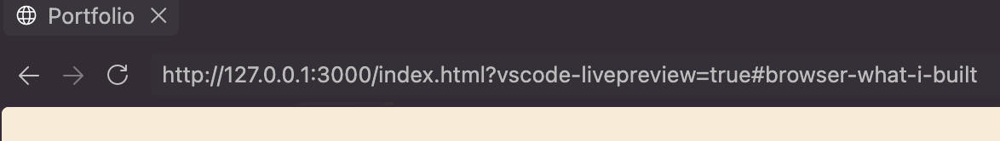
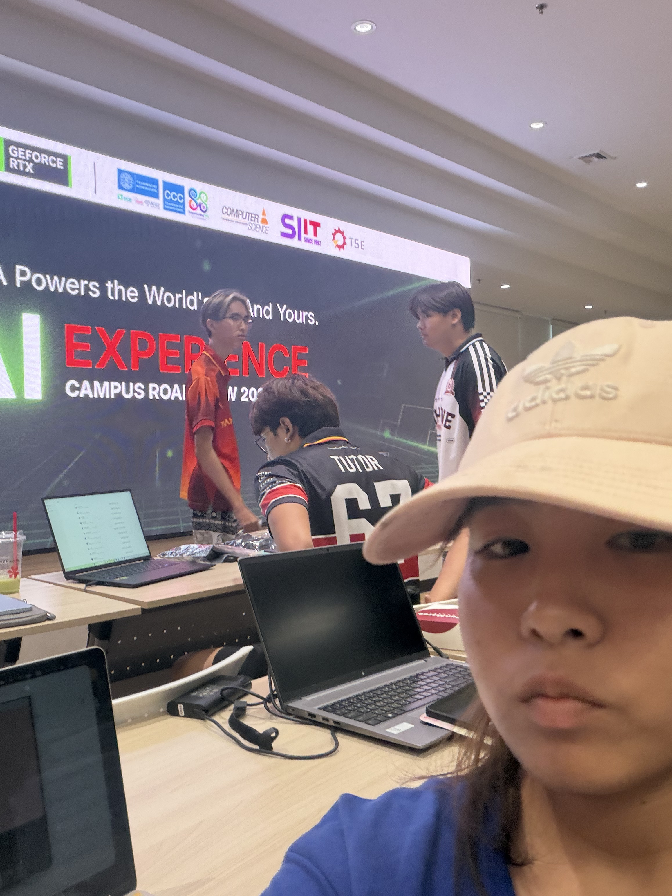

hi! i'm mameaw
please click on the icon below to see more information about me and my work
wanvisa phumam
* student informationstudent id: 6909617885
major: Computer Science
university: Thammasat University
hobby:
- drawing sometime
- reading novels, manga, manhwa, manhua
- listening to music
- watching youtube, movies, anime and series
- playing games (minecraft, honkai star rail)
- practicing programming, English and Math
Language being studied:
- HTML CSS JS C C# C++ JAVA(minecraft) Python
strengths:
- เรียนรู้ได้ไว้ / ตั้งใจที่จะทำสิ่งนึงให้ดี
weaknesses:
- คิดเยอะเกินไป / เปลี่ยนเป้าหมายง่าย /การสื่อสาร / ความมั่นใจในตนเอง / เวลาชอบทำอะไรจะทำมากเกินไปจนทำให้การพักผ่อนน้อย
what i built
q: สร้างอะไรเว็ปไซต์อะไร ?
สร้างเว็ปไซต์ส่วนตัวของตัวเอง โดยใช้ HTML และ CSS
q: มีส่วนประกอบสำคัญอะไรบ้าง ?
มีส่วนประกอบสำคัญดังนี้:
- ส่วนของหน้าแรก (home) เป็นหน้าที่แสดงข้อมูลเกี่ยวกับตัวเองและลิงก์ไปยังหน้าต่างๆ
- ส่วนของ about me เป็นหน้าที่แสดงข้อมูลเกี่ยวกับตัวเอง
- ส่วนของ what i built เป็นหน้าที่แสดงข้อมูลเกี่ยวกับเว็ปไซต์ที่สร้างขึ้น
- ส่วนของ how i built it เป็นหน้าที่แสดงข้อมูลเกี่ยวกับวิธีการสร้างเว็ปไซต์
- ส่วนของ reflection เป็นหน้าที่แสดงข้อมูลเกี่ยวกับปัญหาที่พบและวิธีแก้ไข
- ส่วนของ contact เป็นหน้าที่แสดงข้อมูลติดต่อ
q: ในขณะที่เปิดเว็บไซต์จากเครื่องของตนเอง มี client หรือ server เกิดขึ้นแล้วหรือไม่ เพราะเหตุใด ?
มีทั้ง client และ server เกิดขึ้น เพราะ http://127.0.0.1:3000

ที่เกิดจาก local server (Live server) ส่วน client คือเกิดขึ้นตอนที่เรากดที่ไฟล์ index.html จากนั้น browser ที่ขึ้นมาจะส่ง request ไปที่ 127.0.0.1:3000 เพื่อขอไฟล์ index.html
how i built it
q: พัฒนางานนี้อย่างไร ?
- เริ่มจากสร้างโค้ดที่ HTML
- แบ่งหน้าเว็บเป็นส่วนต่างๆ ตามโครงสร้างที่วางไว้
- ตกแต่งหน้าเว็บด้วย CSS
- พอเสร็จก็ดูอีกครั้งว่าควรเพิ่มหรือลดอะไร
q: มีขั้นตอนสำคัญอะไรบ้าง ?
- วางแผนก่อนว่าเราอยากได้หน้าเว็บแบบไหน
- สร้างโครงสร้างของหน้าเว็บด้วย HTML ไปพร้อมๆ กับการตกแต่งด้วย CSS จะทำให้เห็นความคืบหน้าตลอด
- ตรวจสอบว่าตรงไหนเกิดปัญหาไหม ถ้าเจอปัญหาก็ไปดูว่าตรงไหนแล้วก็กลับไปแก้ที่ HTML CSS
q: ใช้เครื่องมือหรือแหล่งข้อมูลใดในการช่วยเรียนรู้และพัฒนา ?
- ใช้ VS Code ในการเขียนโค้ด
- ใช้เอกสารและแบบฝึกหัดของทางรายวิชาบ้างส่วน
- ใช้ Google ในการหา รูปแบบและตัวอย่างของ function ต่างๆ ของ HTML CSS ที่สนใจ
- ถาม Claude ทำไม CSS แสดงผลบนมือถือแล้วตัวอักษรหลบไปใต้ขอบ พอรู้ว่าเกิดจากที่เรากำหนด ขนาดแต่ละ section ไม่ดีก็ทำการแก้ให้ถูกจุด
reflection
q: ปัญหาหรือความท้าทายที่พบคืออะไร ?
- จำไม่ได้ชื่อฟังก์ชันของ CSS ต้องไปหา
- การจัดวางองค์ประกอบของหน้าเว็บให้สวยงามและเหมาะสม
- พอโค้ดเยอะก็จะหาไม่ค่อยเจอว่าทำถึงตรงไหนแล้ว
q: แก้หรือรับมืออย่างไรจากการทำ ?
- วางแผนหน้าเว็บก่อนเริ่มสร้าง
- ใช้ comment ในโค้ดเพื่อบอกว่าตรงนี้ทำอะไรเมื่อกลับไปแก้ได้รวดเร็วขึ้น
- ค่อยๆ ทำไป review ไปตรงไหนจะแก้ไขจะได้แก้ไขตั้งแต่เริ่ม พลายามไม่ทำให้โค้ดผิดช่วงแรกๆ เพราะพอโค้ดเยอะจะเริ่มดูยากขึ้น
q: เข้าใจอะไรเกี่ยวกับการพัฒนาเว็บไซต์มากขึ้นหากได้พัฒนางานนี้ต่อ ?
- เข้าใจการทำงานของ HTML CSS มากขึ้น หากได้พัฒนาเว็บไซต์ต่อจะทำเป็น เว็บโชว์ผลงานการเขียนโค้ด และ ดาวห์โหลด
- เข้าใจการวางแผนและการจัดองค์ประกอบของหน้าเว็บให้เหมาะสม
q: อยากปรับปรุงหรือเพิ่มอะไร เพราะอะไร?
- อยากให้หน้าเว็ปสวยขึ้นมีลูกเล่นมากขึ้นและใช้งานง่าย เพราะ เวลาเราเป็นผู้ใช้งานเวลาเราเข้าเว็บไหนถ้าเว็บไม่มีความน่าสนใจก็ไม่สมารถดึงดูดได้
- อยากลองทำเป็น portfolio เพิ่มผลงานได้ ให้ดาวน์โหลดผลงานได้ สามารถทำให้มีคน feedback ได้ เพราะ ทำเป็นแหล่งเก็บข้อมูลออนไลน์ได้
q: เพราะอะไรหน้าเว็บต้องมีองค์ประกอบที่หลากหลาย ?
- แบ่งเนื้อหา เพราะถ้ามีองค์ประกอบเดียวจะทำให้หน้าเว็บดูเบื่อและไม่น่าสนใจ มันจะเหมือนกระดาษ A4 เปล่า
- ทำให้เว็บดูมีความน่าสนใจและใช้งานง่าย
my portfolio
CS100 A1: My First Learning Portfolio
Type: Course Assignment
Date: 30/08/2026
Role: Individual Developer
Description: พัฒนาเว็บไซต์ Learning Portfolio หน้าเดียวด้วย HTML และ CSS ทำหน้าต่างแบบ browser มีหน้า home เป็นเมนู และกดเมนูแล้วเปิดหน้าต่างย่อยแต่ละหน้าด้วย :target ได้แก่ about me, what i built, how i built it, reflection และ contact
Skills: HTML, CSS, Semantic HTML
Reflection:
- What I did: วางแผนหน้าเว็บก่อน แล้วเขียนโครงสร้างด้วย HTML ไปพร้อมๆ กับตกแต่งด้วย CSS เพื่อให้เห็นความคืบหน้าตลอด เมื่อเสร็จก็ตรวจดูอีกครั้งว่าควรเพิ่มหรือลดอะไร
- What I learned: เข้าใจการทำงานร่วมกันของ HTML กับ CSS มากขึ้น และเข้าใจว่าการวางแผนหน้าเว็บก่อนเริ่มทำและการแบ่งองค์ประกอบให้เหมาะสมช่วยให้หน้าเว็บอ่านง่ายและน่าสนใจ
- Challenge: จำชื่อ property ของ CSS ไม่ได้ต้องค้นหาบ่อย การจัดวางองค์ประกอบให้สวยงามไม่ง่าย และพอโค้ดยาวขึ้นก็หาไม่เจอว่าทำถึงตรงไหน แก้โดยใช้ comment ในโค้ด และทำไปตรวจไปตั้งแต่เริ่มเพื่อไม่ให้ข้อผิดพลาดสะสม นอกจากนี้เคยเจอปัญหาตัวอักษรหลบไปใต้ขอบบนมือถือ เพราะกำหนดขนาด section ไม่ดี จึงแก้ให้ถูกจุด
- Next step: อยากทำให้เว็บสวยขึ้น มีลูกเล่นมากขึ้น และใช้งานบนมือถือได้ดีขึ้น รวมถึงต่อยอดเป็นเว็บเก็บผลงานที่เพิ่มงานและให้คนมา feedback ได้
Evidence: GitHub Repository (A1)
AORUS AI EXPERIENCE CAMPUS ROADSHOW 2026 — Future Ready with AI
Type: Activity
Date: 04/09/2026
Role: Participant
Description: เข้าร่วมงานเกี่ยวกับ AI ในงานมีการใช้ Ollama ซึ่งเป็นเครื่องมือสำหรับรัน AI model บนเครื่องของตัวเอง
Skills: AI Awareness, Using Ollama, Technology Awareness
Reflection:
- What I did: เข้าร่วมงานและได้เห็นการใช้งาน Ollama ในการรัน AI model
- What I learned: ได้รู้ว่า AI ไม่ได้ใช้ได้แค่ผ่านเว็บแชต แต่สามารถรันบนเครื่องของตัวเองได้ด้วยเครื่องมืออย่าง Ollama และเห็นว่า AI เป็นเครื่องมือช่วยงานที่เราต้องตรวจสอบและตัดสินใจเองว่าจะใช้ผลลัพธ์ตรงไหน
- Challenge:เป็นครั้งแรกที่ใช้ Ollama ลองใช้แล้วก็เห็นว่าใช้งานได้ไม่ยาก โดยผ่าน Terminal
- Next step: อยากลองติดตั้งบนเครื่องของตัวเอง และใช้ช่วยเรียนเขียนโปรแกรม โดยตรวจสอบคำตอบทุกครั้งก่อนนำไปใช้
Evidence:
